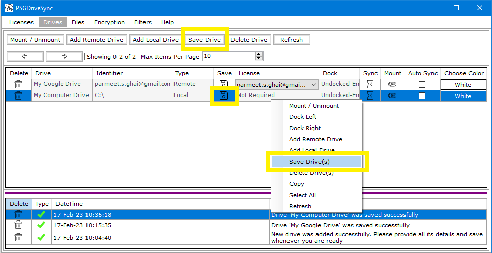

Whenever you add a drive in the application then most of the drive's properties become uneditable except for "Auto Sync" and "Color" which can be changed whenever you want. Following are the steps needed to be followed in order save a drive in the application.
|
1 |
Right after you have added a new drive or changed an existing drive properties, you can do any one of the following
|
 |